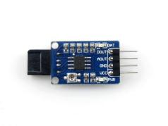
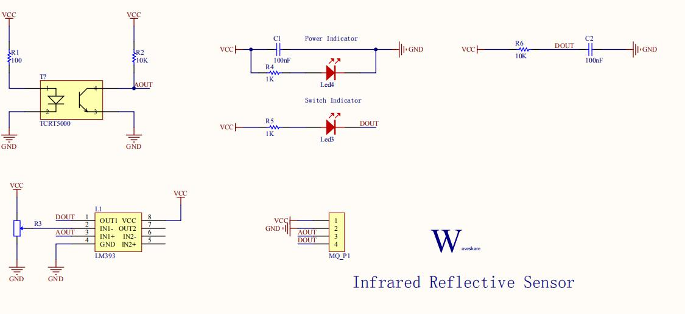
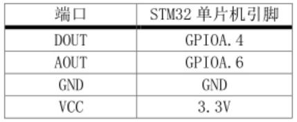
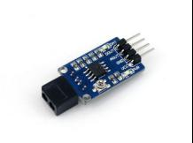
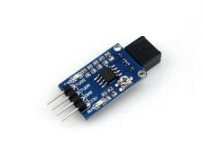

光传感器模块/一体红外收发模块
功能简介
传感器靠近障碍物时，模块上的信号指示灯点亮。
传感器远离障碍物时，模块上的信号指示灯熄灭。
广泛用于机器人避障、避障小车、流水线计数及黑白线循迹等。
工作原理
红外发射管是由红外发光二极管矩组成发光体，用红外辐射效率高的材料（常用砷化镓）制成 PN 结，正向偏压向 PN 结注入电流激发红外光，其光谱功率分布为中心波长 830-950nm。红外光的功率和电流大小有关，但正 向电流超过最大额定值时，红外光发射功率反而下降。红外接收管是将红外线光信号变成电信号的半导体器件，它的核心部件是一个特殊材料的 PN 结，和普通二极相比，在结构上采取了大的改变，目的是为了更多更大面积的接收入射光，随着红外光强度的增加电流也随之增大。
型号及实物照片
Infrared Reflective Sensor
ST188

原理图、接线图
 
性能描述
1． 工作频率高，灵敏度高：采用高发射功率红外光电二极管和高灵敏度光电晶体管组成。
2． 检测距离远：检测距离可调整范围大，4-13mm 可用。
3． 操作方便：采用非接触检测方式。
基本驱动代码
/* Private function prototypes -----------------------------------------------*/
void USART_Configuration(void);
void ADC_Configuration(void);
/* Private variables ---------------------------------------------------------*/
float AD_value;
vu16 ADC_ConvertedValue;
void user_gpio_init(void)
{
GPIO_InitTypeDef GPIO_InitStructure;
RCC_APB2PeriphClockCmd(RCC_APB2Periph_GPIOA,ENABLE);
GPIO_InitStructure.GPIO_Pin=GPIO_Pin_4;
GPIO_InitStructure.GPIO_Mode=GPIO_Mode_IPU;
GPIO_Init(GPIOA,&GPIO_InitStructure);
}
/*******************************************************************************
* Function Name : main
* Description : Main program
* Input : None
* Output : None
* Return : None
* Attention : None
*******************************************************************************/
int main(void)
{
Delay_Init();
usart_Configuration();
ADC_Configuration();
user_gpio_init();
printf("\r\n****************************************************************\r\n");
/* Infinite loop */
while (1)
{
if(GPIO_ReadInputDataBit(GPIOA,GPIO_Pin_4))
printf("The Obstacles is far!\r\n");
else
printf("The Obstacles is near!\r\n");
/* Printf message with AD value to serial port every 1 second */
AD_value = ADC_ConvertedValue;
AD_value = (AD_value/4096)*3.3;
printf("The current Obstacles AD value = %4.2fV \r\n", AD_value);
Delay(100); /* delay 1000ms */
}
}
/*******************************************************************************
* Function Name : ADC_Configuration
* Description : Configure the ADC.
* Input : None
* Output : None
* Return : None
* Attention : None
*******************************************************************************/
void ADC_Configuration(void)
{
ADC_InitTypeDef ADC_InitStructure;
DMA_InitTypeDef DMA_InitStructure;
GPIO_InitTypeDef GPIO_InitStructure;
RCC_AHBPeriphClockCmd(RCC_AHBPeriph_DMA1, ENABLE);
RCC_APB2PeriphClockCmd(RCC_APB2Periph_ADC1 | RCC_APB2Periph_GPIOA | RCC_APB2Periph_AFIO, ENABLE);
/* Configure PA.06 (ADC Channel6), PA.07 (ADC Channel7) as analog input -------------------------*/
GPIO_InitStructure.GPIO_Pin = GPIO_Pin_6 | GPIO_Pin_7;
GPIO_InitStructure.GPIO_Speed = GPIO_Speed_50MHz;
GPIO_InitStructure.GPIO_Mode = GPIO_Mode_AIN;
GPIO_Init(GPIOA, &GPIO_InitStructure);
/* DMA channel1 configuration ----------------------------------------------*/
DMA_DeInit(DMA1_Channel1);
DMA_InitStructure.DMA_PeripheralBaseAddr = ADC1_DR_Address;
DMA_InitStructure.DMA_MemoryBaseAddr = (u32)&ADC_ConvertedValue;
DMA_InitStructure.DMA_DIR = DMA_DIR_PeripheralSRC;
DMA_InitStructure.DMA_BufferSize = 1;
DMA_InitStructure.DMA_PeripheralInc = DMA_PeripheralInc_Disable;
DMA_InitStructure.DMA_MemoryInc = DMA_MemoryInc_Disable;
DMA_InitStructure.DMA_PeripheralDataSize = DMA_PeripheralDataSize_HalfWord;
DMA_InitStructure.DMA_MemoryDataSize = DMA_MemoryDataSize_HalfWord;
DMA_InitStructure.DMA_Mode = DMA_Mode_Circular;
DMA_InitStructure.DMA_Priority = DMA_Priority_High;
DMA_InitStructure.DMA_M2M = DMA_M2M_Disable;
DMA_Init(DMA1_Channel1, &DMA_InitStructure);
/* Enable DMA1 channel1 */
DMA_Cmd(DMA1_Channel1, ENABLE);
/* ADC1 configuration ------------------------------------------------------*/
ADC_InitStructure.ADC_Mode = ADC_Mode_Independent;
ADC_InitStructure.ADC_ScanConvMode = ENABLE;
ADC_InitStructure.ADC_ContinuousConvMode = ENABLE;
ADC_InitStructure.ADC_ExternalTrigConv = ADC_ExternalTrigConv_None;
ADC_InitStructure.ADC_DataAlign = ADC_DataAlign_Right;
ADC_InitStructure.ADC_NbrOfChannel = 1;
ADC_Init(ADC1, &ADC_InitStructure);
/* ADC1 regular channel6 configuration */
ADC_RegularChannelConfig(ADC1, ADC_Channel_6, 1, ADC_SampleTime_239Cycles5);
/* Enable ADC1 DMA */
ADC_DMACmd(ADC1, ENABLE);
/* Enable ADC1 */
ADC_Cmd(ADC1, ENABLE);
/* Enable ADC1 reset calibaration register */
ADC_ResetCalibration(ADC1);
/* Check the end of ADC1 reset calibration register */
while(ADC_GetResetCalibrationStatus(ADC1));
/* Start ADC1 calibaration */
ADC_StartCalibration(ADC1);
/* Check the end of ADC1 calibration */
while(ADC_GetCalibrationStatus(ADC1));
/* Start ADC1 Software Conversion */
ADC_SoftwareStartConvCmd(ADC1, ENABLE);
}
#ifdef USE_FULL_ASSERT
/**
* @brief Reports the name of the source file and the source line number
* where the assert_param error has occurred.
* @param file: pointer to the source file name
* @param line: assert_param error line source number
* @retval None
*/
void assert_failed(uint8_t* file, uint32_t line)
{
/* User can add his own implementation to report the file name and line number,
ex: printf("Wrong parameters value: file %s on line %d\r\n", file, line) */
/* Infinite loop */
while (1)
{
}
}
#endif
产品手册
1.1产品描述：
使用宽电压LM393电压比较器
灵敏度可调
信号输出指示
产品参数：
工作电压：3.0V ~ 5.3V
产品尺寸：25mm * 15.9mm
固定孔尺寸：2.0mm
主要用途：
机器人循迹、避障小车和流水线计数等
接口说明：(以接入MCU为例)
VCC：接3.0V ~ 5.3V
GND：接GND
AOUT：接MCU.IO (模拟量输出)
DOUT：接MCU.IO (数字量输出)


1.2 产品特性
传感器 ST188
电压比较器芯片 宽电压LM393
工作电压 3.0V-5.3V
产品尺寸 30.2mm*11.9mm
固定孔尺寸 2.0mm
表 1. 产品特性
| 传感器 | ST188 |
|---|---|
| 电压比较器芯片 | 宽电压LM393 |
| 工作电压 | 3.0V-5.3V |
| 产片尺寸 | 30.2mm*11.9mm |
| 固定孔尺寸 | 2.0mm |
1.3产品原理
红外发射管是由红外发光二极管矩组成发光体，用红外辐射效率高的材料（常用砷化镓）制成 PN 结，正向偏压向 PN 结注入电流激发红外光，其光谱功率分布为中心波长 830-950nm。红外光的功率和电流大小有关，但正向电流超过最大额定值时，红外光发射功率反而下降。红外接收管是将红外线光信号变成电信号的半导体器件，它的核心部件是一个特殊材料的 PN 结，和普通二极管相比，在结构上采取了大的改变，目的是为了更多更大面积的接收入射光，随着红外光强度的增加电流也随之增大。
1.4主要用途
机器人避障、避障小车、流水线计数及黑白线循迹等。
1.5接口说明
| 引脚号 | 标识 | 描述 |
|---|---|---|
| 1 | DOUT | 数字量输出 |
| 2 | AOUT | 模拟量输出 |
| 3 | GND | 电源地 |
| 4 | VCC | 电源正（3.0V-5.3V） |
操作与现象
下面，以接入我们的开发板为例。
① 将配套程序下载到相应的开发板中。
② 将串口线和模块接入开发板，给开发板上电，打开串口调试软件。
模块与开发板连接如下表所示：
| 端口 | STM32单片机引脚 |
|---|---|
| DOUT | GPIOA.4 |
| AOUT | GPIOA.6 |
| GND | GND |
| VCC | 3.3V |
Arduino引脚连接
| 端口 | Arduino引脚 |
|---|---|
| DOUT | D2 |
| AOUT | A0 |
| GND | GND |
| VCC | 5V |
串口配置如下表所示：
| Baud rate | 115200 |
|---|---|
| Data bits | 8 |
| Stop bit | 1 |
| Parity bit | None |
③ 传感器靠近障碍物时，模块上的信号指示灯点亮。
传感器远离障碍物时，模块上的信号指示灯熄灭。
随着传感器与障碍物距离的变化，串口输出的数据会发生相应改变。
作者
刘馨雯